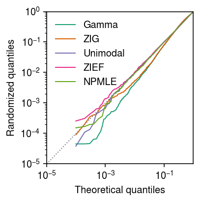
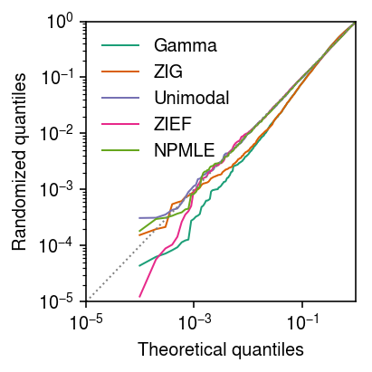
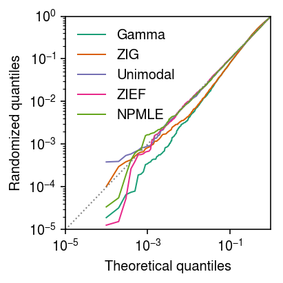
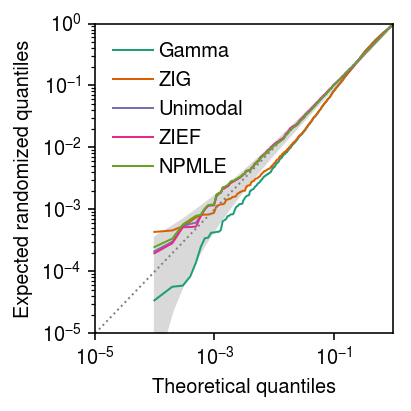

Randomized quantiles
Table of Contents
Introduction
We previously illustrated an example of our approach to testing GOF using real data. Here, we characterize the variability in the randomized quantiles that went into that illustration.
Setup
import numpy as np import pandas as pd import scmodes import scipy.stats as st import scipy.special as sp import sqlite3
%matplotlib inline %config InlineBackend.figure_formats = set(['retina'])
import matplotlib.pyplot as plt plt.rcParams['figure.facecolor'] = 'w' plt.rcParams['font.family'] = 'Nimbus Sans'
Data
Read the data.
gene_info = pd.read_csv('/project2/mstephens/aksarkar/projects/singlecell-qtl/data/scqtl-genes.txt.gz', sep='\t', index_col=0)
cytotoxic_t = scmodes.dataset.read_10x('/project2/mstephens/aksarkar/projects/singlecell-ideas/data/10xgenomics/cytotoxic_t/filtered_matrices_mex/hg19/', return_df=True)
gene = 'ENSG00000109475' x = cytotoxic_t.loc[:,gene] s = cytotoxic_t.sum(axis=1) y = np.arange(x.max() + 1)
Seed 2
Generate an independent draw of randomized quantiles.
rpp = dict() pmf = dict() np.random.seed(2) gamma_res = scmodes.ebpm.ebpm_gamma(x, s) rpp['Gamma'] = scmodes.benchmark.gof._rpp( scmodes.benchmark.gof._zig_cdf(x - 1, size=s, log_mu=gamma_res[0], log_phi=-gamma_res[1]), scmodes.benchmark.gof._zig_pmf(x, size=s, log_mu=gamma_res[0], log_phi=-gamma_res[1])) pmf['Gamma'] = np.array([scmodes.benchmark.gof._zig_pmf(k, size=s, log_mu=gamma_res[0], log_phi=-gamma_res[1]).mean() for k in y]) point_gamma_res = scmodes.ebpm.ebpm_point_gamma(x, s) rpp['ZIG'] = scmodes.benchmark.gof._rpp( scmodes.benchmark.gof._zig_cdf(x - 1, size=s, log_mu=point_gamma_res[0], log_phi=-point_gamma_res[1], logodds=point_gamma_res[2]), scmodes.benchmark.gof._zig_pmf(x, size=s, log_mu=point_gamma_res[0], log_phi=-point_gamma_res[1], logodds=point_gamma_res[2])) pmf['ZIG'] = np.array([scmodes.benchmark.gof._zig_pmf(k, size=s, log_mu=point_gamma_res[0], log_phi=-point_gamma_res[1], logodds=point_gamma_res[2]).mean() for k in y]) zief_res = scmodes.ebpm.ebpm_point_expfam(x, s) rpp['ZIEF'] = scmodes.benchmark.gof._rpp( scmodes.benchmark.gof._point_expfam_cdf(x.values.ravel() - 1, size=s, res=zief_res), scmodes.benchmark.gof._point_expfam_pmf(x.values.ravel(), size=s, res=zief_res)) # We need np.full here because _point_expfam_pmf does not broadcast pmf['ZIEF'] = np.array([scmodes.benchmark.gof._point_expfam_pmf(np.full(x.shape, k), size=s, res=zief_res).mean() for k in y]) unimodal_res = scmodes.ebpm.ebpm_unimodal(x, s) rpp['Unimodal'] = scmodes.benchmark.gof._rpp( scmodes.benchmark.gof._ash_cdf(x - 1, s=s, fit=unimodal_res), scmodes.benchmark.gof._ash_pmf(x, s=s, fit=unimodal_res)) # It is simpler to compute this here than to mess with the ash_data object g = np.array(unimodal_res.rx2('fitted_g')) a = np.fmin(g[1], g[2]) b = np.fmax(g[1], g[2]) comp_dens_conv = np.array([((st.gamma(a=k + 1, scale=1 / s.values.reshape(-1, 1)).cdf(b.reshape(1, -1)) - st.gamma(a=k + 1, scale=1 / s.values.reshape(-1, 1)).cdf(a.reshape(1, -1))) / np.outer(s, b - a)).mean(axis=0) for k in y]) comp_dens_conv[:,0] = st.poisson(mu=s.values.reshape(-1, 1) * b[0]).pmf(y).mean(axis=0) pmf['Unimodal'] = comp_dens_conv @ g[0] npmle_res = scmodes.ebpm.ebpm_npmle(x, s) rpp['NPMLE'] = scmodes.benchmark.gof._rpp( scmodes.benchmark.gof._ash_cdf(x - 1, s=s, fit=npmle_res), scmodes.benchmark.gof._ash_pmf(x, s=s, fit=npmle_res)) g = np.array(npmle_res.rx2('fitted_g')) a = np.fmin(g[1], g[2]) b = np.fmax(g[1], g[2]) comp_dens_conv = np.array([((st.gamma(a=k + 1, scale=1 / s.values.reshape(-1, 1)).cdf(b.reshape(1, -1)) - st.gamma(a=k + 1, scale=1 / s.values.reshape(-1, 1)).cdf(a.reshape(1, -1))) / np.outer(s, b - a)).mean(axis=0) for k in y]) pmf['NPMLE'] = comp_dens_conv @ g[0]
Plot the randomized quantiles against uniform quantiles.
plt.clf() plt.gcf().set_size_inches(3, 3) grid = np.linspace(0, 1, x.shape[0] + 1)[1:] plt.xscale('log') plt.yscale('log') for c, k in zip(plt.get_cmap('Dark2').colors, ['Gamma', 'ZIG', 'Unimodal', 'ZIEF', 'NPMLE']): if k in rpp: plt.plot(grid, np.sort(rpp[k]), color=c, lw=1, marker=None, label=k) plt.plot([1e-5, 1], [1e-5, 1], lw=1, ls=':', c='0.5') plt.legend(frameon=False) plt.xlim(1e-5, 1) plt.ylim(1e-5, 1) plt.xlabel('Theoretical quantiles') plt.ylabel('Randomized quantiles') plt.tight_layout()

Seed 3
Generate an independent draw of randomized quantiles.
rpp = dict() pmf = dict() np.random.seed(3) gamma_res = scmodes.ebpm.ebpm_gamma(x, s) rpp['Gamma'] = scmodes.benchmark.gof._rpp( scmodes.benchmark.gof._zig_cdf(x - 1, size=s, log_mu=gamma_res[0], log_phi=-gamma_res[1]), scmodes.benchmark.gof._zig_pmf(x, size=s, log_mu=gamma_res[0], log_phi=-gamma_res[1])) pmf['Gamma'] = np.array([scmodes.benchmark.gof._zig_pmf(k, size=s, log_mu=gamma_res[0], log_phi=-gamma_res[1]).mean() for k in y]) point_gamma_res = scmodes.ebpm.ebpm_point_gamma(x, s) rpp['ZIG'] = scmodes.benchmark.gof._rpp( scmodes.benchmark.gof._zig_cdf(x - 1, size=s, log_mu=point_gamma_res[0], log_phi=-point_gamma_res[1], logodds=point_gamma_res[2]), scmodes.benchmark.gof._zig_pmf(x, size=s, log_mu=point_gamma_res[0], log_phi=-point_gamma_res[1], logodds=point_gamma_res[2])) pmf['ZIG'] = np.array([scmodes.benchmark.gof._zig_pmf(k, size=s, log_mu=point_gamma_res[0], log_phi=-point_gamma_res[1], logodds=point_gamma_res[2]).mean() for k in y]) zief_res = scmodes.ebpm.ebpm_point_expfam(x, s) rpp['ZIEF'] = scmodes.benchmark.gof._rpp( scmodes.benchmark.gof._point_expfam_cdf(x.values.ravel() - 1, size=s, res=zief_res), scmodes.benchmark.gof._point_expfam_pmf(x.values.ravel(), size=s, res=zief_res)) # We need np.full here because _point_expfam_pmf does not broadcast pmf['ZIEF'] = np.array([scmodes.benchmark.gof._point_expfam_pmf(np.full(x.shape, k), size=s, res=zief_res).mean() for k in y]) unimodal_res = scmodes.ebpm.ebpm_unimodal(x, s) rpp['Unimodal'] = scmodes.benchmark.gof._rpp( scmodes.benchmark.gof._ash_cdf(x - 1, s=s, fit=unimodal_res), scmodes.benchmark.gof._ash_pmf(x, s=s, fit=unimodal_res)) # It is simpler to compute this here than to mess with the ash_data object g = np.array(unimodal_res.rx2('fitted_g')) a = np.fmin(g[1], g[2]) b = np.fmax(g[1], g[2]) comp_dens_conv = np.array([((st.gamma(a=k + 1, scale=1 / s.values.reshape(-1, 1)).cdf(b.reshape(1, -1)) - st.gamma(a=k + 1, scale=1 / s.values.reshape(-1, 1)).cdf(a.reshape(1, -1))) / np.outer(s, b - a)).mean(axis=0) for k in y]) comp_dens_conv[:,0] = st.poisson(mu=s.values.reshape(-1, 1) * b[0]).pmf(y).mean(axis=0) pmf['Unimodal'] = comp_dens_conv @ g[0] npmle_res = scmodes.ebpm.ebpm_npmle(x, s) rpp['NPMLE'] = scmodes.benchmark.gof._rpp( scmodes.benchmark.gof._ash_cdf(x - 1, s=s, fit=npmle_res), scmodes.benchmark.gof._ash_pmf(x, s=s, fit=npmle_res)) g = np.array(npmle_res.rx2('fitted_g')) a = np.fmin(g[1], g[2]) b = np.fmax(g[1], g[2]) comp_dens_conv = np.array([((st.gamma(a=k + 1, scale=1 / s.values.reshape(-1, 1)).cdf(b.reshape(1, -1)) - st.gamma(a=k + 1, scale=1 / s.values.reshape(-1, 1)).cdf(a.reshape(1, -1))) / np.outer(s, b - a)).mean(axis=0) for k in y]) pmf['NPMLE'] = comp_dens_conv @ g[0]
Plot the randomized quantiles against uniform quantiles.
plt.clf() plt.gcf().set_size_inches(3, 3) grid = np.linspace(0, 1, x.shape[0] + 1)[1:] plt.xscale('log') plt.yscale('log') for c, k in zip(plt.get_cmap('Dark2').colors, ['Gamma', 'ZIG', 'Unimodal', 'ZIEF', 'NPMLE']): if k in rpp: plt.plot(grid, np.sort(rpp[k]), color=c, lw=1, marker=None, label=k) plt.plot([1e-5, 1], [1e-5, 1], lw=1, ls=':', c='0.5') plt.legend(frameon=False) plt.xlim(1e-5, 1) plt.ylim(1e-5, 1) plt.xlabel('Theoretical quantiles') plt.ylabel('Randomized quantiles') plt.tight_layout()

Seed 10
Generate an independent draw of randomized quantiles.
rpp = dict() pmf = dict() np.random.seed(10) gamma_res = scmodes.ebpm.ebpm_gamma(x, s) rpp['Gamma'] = scmodes.benchmark.gof._rpp( scmodes.benchmark.gof._zig_cdf(x - 1, size=s, log_mu=gamma_res[0], log_phi=-gamma_res[1]), scmodes.benchmark.gof._zig_pmf(x, size=s, log_mu=gamma_res[0], log_phi=-gamma_res[1])) pmf['Gamma'] = np.array([scmodes.benchmark.gof._zig_pmf(k, size=s, log_mu=gamma_res[0], log_phi=-gamma_res[1]).mean() for k in y]) point_gamma_res = scmodes.ebpm.ebpm_point_gamma(x, s) rpp['ZIG'] = scmodes.benchmark.gof._rpp( scmodes.benchmark.gof._zig_cdf(x - 1, size=s, log_mu=point_gamma_res[0], log_phi=-point_gamma_res[1], logodds=point_gamma_res[2]), scmodes.benchmark.gof._zig_pmf(x, size=s, log_mu=point_gamma_res[0], log_phi=-point_gamma_res[1], logodds=point_gamma_res[2])) pmf['ZIG'] = np.array([scmodes.benchmark.gof._zig_pmf(k, size=s, log_mu=point_gamma_res[0], log_phi=-point_gamma_res[1], logodds=point_gamma_res[2]).mean() for k in y]) zief_res = scmodes.ebpm.ebpm_point_expfam(x, s) rpp['ZIEF'] = scmodes.benchmark.gof._rpp( scmodes.benchmark.gof._point_expfam_cdf(x.values.ravel() - 1, size=s, res=zief_res), scmodes.benchmark.gof._point_expfam_pmf(x.values.ravel(), size=s, res=zief_res)) # We need np.full here because _point_expfam_pmf does not broadcast pmf['ZIEF'] = np.array([scmodes.benchmark.gof._point_expfam_pmf(np.full(x.shape, k), size=s, res=zief_res).mean() for k in y]) unimodal_res = scmodes.ebpm.ebpm_unimodal(x, s) rpp['Unimodal'] = scmodes.benchmark.gof._rpp( scmodes.benchmark.gof._ash_cdf(x - 1, s=s, fit=unimodal_res), scmodes.benchmark.gof._ash_pmf(x, s=s, fit=unimodal_res)) # It is simpler to compute this here than to mess with the ash_data object g = np.array(unimodal_res.rx2('fitted_g')) a = np.fmin(g[1], g[2]) b = np.fmax(g[1], g[2]) comp_dens_conv = np.array([((st.gamma(a=k + 1, scale=1 / s.values.reshape(-1, 1)).cdf(b.reshape(1, -1)) - st.gamma(a=k + 1, scale=1 / s.values.reshape(-1, 1)).cdf(a.reshape(1, -1))) / np.outer(s, b - a)).mean(axis=0) for k in y]) comp_dens_conv[:,0] = st.poisson(mu=s.values.reshape(-1, 1) * b[0]).pmf(y).mean(axis=0) pmf['Unimodal'] = comp_dens_conv @ g[0] npmle_res = scmodes.ebpm.ebpm_npmle(x, s) rpp['NPMLE'] = scmodes.benchmark.gof._rpp( scmodes.benchmark.gof._ash_cdf(x - 1, s=s, fit=npmle_res), scmodes.benchmark.gof._ash_pmf(x, s=s, fit=npmle_res)) g = np.array(npmle_res.rx2('fitted_g')) a = np.fmin(g[1], g[2]) b = np.fmax(g[1], g[2]) comp_dens_conv = np.array([((st.gamma(a=k + 1, scale=1 / s.values.reshape(-1, 1)).cdf(b.reshape(1, -1)) - st.gamma(a=k + 1, scale=1 / s.values.reshape(-1, 1)).cdf(a.reshape(1, -1))) / np.outer(s, b - a)).mean(axis=0) for k in y]) pmf['NPMLE'] = comp_dens_conv @ g[0]
Plot the randomized quantiles against uniform quantiles.
plt.clf() plt.gcf().set_size_inches(3, 3) grid = np.linspace(0, 1, x.shape[0] + 1)[1:] plt.xscale('log') plt.yscale('log') for c, k in zip(plt.get_cmap('Dark2').colors, ['Gamma', 'ZIG', 'Unimodal', 'ZIEF', 'NPMLE']): if k in rpp: plt.plot(grid, np.sort(rpp[k]), color=c, lw=1, marker=None, label=k) plt.plot([1e-5, 1], [1e-5, 1], lw=1, ls=':', c='0.5') plt.legend(frameon=False) plt.xlim(1e-5, 1) plt.ylim(1e-5, 1) plt.xlabel('Theoretical quantiles') plt.ylabel('Randomized quantiles') plt.tight_layout()

Expected randomized quantiles
The randomized quantiles are
\begin{equation} u_i \mid x_i \sim \operatorname{Uniform}(\hat{F}(x - 1), \hat{F}(x)) \end{equation}for \(i = 1, \ldots, n\); therefore, their expected value is
\begin{equation} \operatorname{E}[u_i \mid x_i] = \frac{\hat{F}(x - 1) + \hat{F}(x)}{2} = \hat{F}(x - 1) + \frac{1}{2}\hat{f}(x). \end{equation}Assuming \(x \sim \hat{F}\), \(u_i \sim \operatorname{Uniform}(0, 1)\) and the \(k\)th order statistic
\begin{equation} u_{(k)} \sim \operatorname{Beta}(k, n - k + 1). \end{equation}Plot the expected randomized quantiles against Uniform quantiles. Superimpose the \((0.025, 0.975)\) quantiles of the distribution of Uniform order statistics.
erpp = dict() gamma_res = scmodes.ebpm.ebpm_gamma(x, s) erpp['Gamma'] = (scmodes.benchmark.gof._zig_cdf(x - 1, size=s, log_mu=gamma_res[0], log_phi=-gamma_res[1]) + .5 * scmodes.benchmark.gof._zig_pmf(x, size=s, log_mu=gamma_res[0], log_phi=-gamma_res[1])) point_gamma_res = scmodes.ebpm.ebpm_point_gamma(x, s) erpp['ZIG'] = (scmodes.benchmark.gof._zig_cdf(x - 1, size=s, log_mu=point_gamma_res[0], log_phi=-point_gamma_res[1], logodds=point_gamma_res[2]) + .5 * scmodes.benchmark.gof._zig_pmf(x, size=s, log_mu=point_gamma_res[0], log_phi=-point_gamma_res[1], logodds=point_gamma_res[2])) zief_res = scmodes.ebpm.ebpm_point_expfam(x, s) erpp['ZIEF'] = (scmodes.benchmark.gof._point_expfam_cdf(x.values.ravel() - 1, size=s, res=zief_res) + .5 * scmodes.benchmark.gof._point_expfam_pmf(x.values.ravel(), size=s, res=zief_res)) unimodal_res = scmodes.ebpm.ebpm_unimodal(x, s) erpp['Unimodal'] = (scmodes.benchmark.gof._ash_cdf(x - 1, s=s, fit=unimodal_res) + .5 * scmodes.benchmark.gof._ash_pmf(x, s=s, fit=unimodal_res)) npmle_res = scmodes.ebpm.ebpm_npmle(x, s) erpp['NPMLE'] = (scmodes.benchmark.gof._ash_cdf(x - 1, s=s, fit=npmle_res) + .5 * scmodes.benchmark.gof._ash_pmf(x, s=s, fit=npmle_res))
grid = np.linspace(0, 1, x.shape[0] + 1)[1:] F = st.beta(np.arange(1, 1 + x.shape[0]), 1 + x.shape[0] - np.arange(1, 1 + x.shape[0])) plt.clf() plt.gcf().set_size_inches(3, 3) plt.xscale('log') plt.yscale('log') for c, k in zip(plt.get_cmap('Dark2').colors, ['Gamma', 'ZIG', 'Unimodal', 'ZIEF', 'NPMLE']): if k in erpp: plt.plot(grid, np.sort(erpp[k]), color=c, lw=1, marker=None, label=k) plt.fill_between(grid, F.ppf(.025), F.ppf(.975), color='0.85') plt.legend(frameon=False, handletextpad=0.25) lim = [1e-5, 1] plt.plot(lim, lim, lw=1, ls=':', c='0.5') plt.xlim(lim) plt.ylim(lim) plt.xlabel('Theoretical quantiles') plt.ylabel('Expected randomized quantiles') plt.tight_layout()

Gamma model
Look at the estimated Gamma model parameters.
pd.Series({k: v for k, v in zip(('log_mean', 'log_inv_disp', 'llik'), gamma_res)})
log_mean -4.567842 log_inv_disp 2.392556 llik -31464.243518 dtype: float64
Look at the estimated point-Gamma model parameters.
pd.Series({k: v for k, v in zip(('log_mean', 'log_inv_disp', 'logodds', 'llik'), point_gamma_res)})
log_mean -4.567096 log_inv_disp 2.404508 logodds -7.125454 llik -31459.278213 dtype: float64
Estimate how many excess zeros in this data are predicted by the point-Gamma model.
sp.expit(point_gamma_res[2]) * x.shape[0]
8.205192265041903
Compute the difference in marginal log likelihood between a point-Gamma and a Gamma expression model.
point_gamma_res[-1] - gamma_res[-1]
4.965304532452137
Compute the difference in marginal log likelihood between a unimodal and a Gamma expression model.
np.array(unimodal_res.rx2('loglik')) - gamma_res[-1]
array([265.32446831])